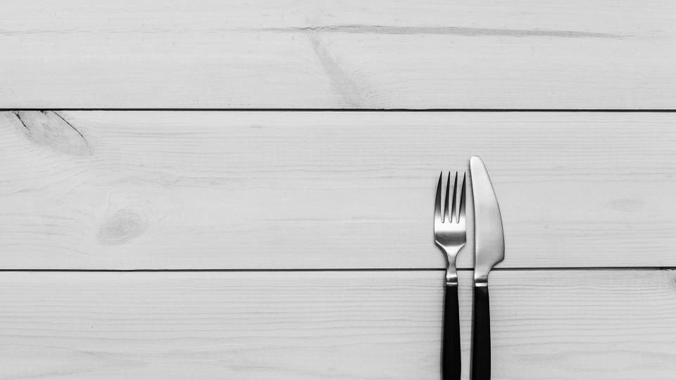

毎月の帳簿付け、月末の請求書、毎日の「今日のごはん、何にしよう」。どれも一回ごとの作業は小さくても、くり返すうちに時間と気力を少しずつ使っていきます。
「自動化」と聞くと難しそうに感じるかもしれませんが、ここで言う自動化は、毎回同じ手順でしている作業を道具や仕組みに任せることです。
この記事では、家で仕事をする人や忙しい家庭に多い3つの困りごと「仕訳入力・帳簿付け」「請求書の作成・送付」「毎日の献立を考える」について、今のやり方と、仕組みに任せる方法を順番に紹介します。
1. 仕訳入力・帳簿付けを自動化する
どんな困りごとか
個人事業主やフリーランス、ひとり法人の方にとって、帳簿付けは後回しにしがちな作業です。
日々の仕事が忙しいと、通帳やカードの明細がたまり、確定申告の前にまとめて入力することになりがちです。入力ミスや、どの勘定科目にするかの迷いも不安のもとになります。
今のやり方
多くの方は、通帳やカードの利用明細を見ながら、日付・金額・取引先を表計算ソフトや会計ソフトに一件ずつ手で入力しています。
件数が多い月ほど時間がかかり、写し間違いがないかの見直しにも手間がかかります。
自動化の方法
銀行口座やクレジットカードを会計ソフトにつなぎ、明細を自動で取り込んで仕訳の候補を作らせるのが基本の形です。
- 口座とカードを分ける：まず、仕事用の口座とカードを決めます。私用と混ざらないほど、自動の仕訳が使いやすくなります
- 会計ソフトとつなぐ：会計ソフトの画面から、銀行・カードとの連携を設定します。以後の明細は自動で取り込まれます
- 仕訳の候補を確認する：取り込まれた明細には仕訳の候補が付くので、内容を確かめて登録します。同じ取引先はルールを作っておくと、次からの候補が合いやすくなります
- 確認する日を決める：週に1回など、候補を確かめる日を決めておくと、申告前にまとめて慌てることを減らしやすくなります
使う道具の例
道具はクラウド会計ソフトです。選ぶときは、次の観点で比べると迷いにくくなります。
- 使っている銀行・カードに対応しているか：連携できる金融機関は道具ごとに違うので、公式サイトで確かめます
- 個人向けか法人向けか：個人事業主向けと法人向けでプランや製品が分かれていることが多いです
- 確定申告まで続けてできるか：個人事業主なら、申告書の作成や電子申告まで同じ道具で進められるかを確認します
たとえば「マネーフォワード クラウド確定申告」は、銀行・クレジットカードなどと連携して明細を自動で取得し、仕訳する機能があり、青色・白色の確定申告書の作成や、アプリからの e-Tax による電子申告（マイナンバーカードと対応スマホが必要）にも対応しています。
料金は、個人向けの最も小さいプランで年払い 月900円（税抜）からです（2026年10月時点・公式サイト）。1ヶ月の無料トライアルがあり、カード登録は不要で、終了後に自動で有料にはならないと書かれています。料金体系は改定の予定も案内されているので、最新は公式サイトでご確認ください。
ほかに「freee会計」も、銀行・カード・電子マネーなどと連携してデータを取り込み、自動仕訳ルールや過去の仕訳をもとに仕訳を手伝う機能があります。
2. 請求書の作成・送付を自動化する
どんな困りごとか
毎月同じ取引先に、ほぼ同じ内容の請求書を出している方は少なくありません。
月末になるたびに作成・印刷・封入・郵送をくり返すのは手間がかかり、出し忘れや金額の書き間違いも気になります。
今のやり方
よくあるのは、Excel などのひな形をコピーして日付と金額を書きかえ、印刷して郵送する方法です。
請求書を出したあとも、入金されたかを通帳で確かめ、帳簿に入力するまでが一連の作業になっています。
自動化の方法
請求書ソフトに取引先と品目を登録し、毎月決まった時期に請求書を作る設定（定期請求）を使うと、くり返しの作成を任せやすくなります。
- 取引先と品目を登録する：宛先・品目・単価を一度登録しておけば、毎回入力しなくて済みます
- 定期請求を設定する：毎月同じ内容の請求は、作成のタイミングを決めて自動で作るように設定します
- 送り方を選ぶ：PDF をメールで送るか、郵送を代行してもらうかを選びます。郵送代行は1通ごとに料金がかかる道具が多いので、事前に確認します
- 会計ソフトとつなぐ：請求の内容が会計ソフトに連携されると、売掛金の仕訳や入金の確認までつながりやすくなります
使う道具の例
道具は請求書ソフト、または請求書を作れる会計ソフトです。選ぶときは次の観点が目安になります。
- 定期請求があるか：プランによっては使えない場合があります
- 送付の方法：メール送付・郵送代行のどちらに対応しているか
- 会計ソフトとの連携：帳簿付けと同じ会社の道具だと、つなぎやすいことが多いです
「マネーフォワード クラウド請求書」は、決まった時期に請求書を自動で作る機能があります（個人向けの最も小さいプランでは使えず、法人向けは全プランで使えると書かれています）。郵送やPDFのメール送付をまとめて行い、送付状況を確認することもできます。
「freee請求書」には機能一覧に定期請求があり、メール送信や郵送代行を選べます。発行枚数・期間が無制限の無料版もありますが、無料版で定期請求やメール送付まで使えるかは公式サイトで確かめてから選ぶと安心です。
また、帳簿付けと請求書をひとつにまとめたい方は、見積書・納品書・請求書（インボイス対応）を作れる「freee会計」のように、会計ソフトの中で請求書を作る方法もあります。
3. 毎日の献立を考えるのを自動化する

どんな困りごとか
毎日の献立は、料理そのものより「何を作るか決める」ことが負担になりやすい作業です。
家族の好みや冷蔵庫の残り、栄養のかたよりまで考えると、仕事や家事の合間に決めるのは大変です。
今のやり方
多くの家庭では、夕方に冷蔵庫を開けてから、その場で献立を考えています。
足りない材料に気づいて買い物に行き直したり、同じメニューが続いたりしがちです。
自動化の方法
考える作業を毎日から週1回にまとめ、その1回をAIや献立アプリに手伝ってもらう形がおすすめです。
- 条件をメモにしておく：家族の人数、苦手な食材やアレルギー、平日に料理にかけられる時間などを書いておきます
- 週1回、まとめて作らせる：冷蔵庫の中身と条件を、ChatGPT や Claude などのAIに伝えて、1週間分の献立と買い物リストを作ってもらいます。献立アプリなら、条件を設定しておけばボタン操作で作れるものもあります
- 買い物を1回にまとめる：できた買い物リストで週末などにまとめて買うと、平日の買い足しを減らしやすくなります
- 作る日を減らす日も入れる：忙しい日はミールキットや冷凍のおかずに任せると決めておくと、献立が回りやすくなります
ポイント
AIの献立は、アレルギーや持病に関わる食事の判断には使わず、気になる点は医師や管理栄養士に相談してください。作った献立は、家族の予定に合わせて自分で入れかえる前提で使うと続けやすくなります。
使う道具の例
道具は、チャットで相談できるAI、献立アプリ、そして材料ごと届くミールキットです。
- AI（Claude など）：Claude は無料プランから使え、会話をまたいだメモリー機能もあります。有料の Pro は年払いで月$17、月払いで$20です（税別・2026年10月時点・公式サイト）
- 献立アプリ（me:new など）：ニチレイフーズが運営する「me:new（ミーニュー）」は、最長1週間分の献立と買い物リストを自動で作り、冷蔵庫の余り物を指定したり、アレルギーや苦手な食材を除いたりできます。無料でダウンロードできます
- ミールキット（ヨシケイなど）：献立と必要な量の食材がまとめて届くので、「決める」と「買う」を両方任せられます。ヨシケイには、はじめての人向けのお試し5daysがあり、配達料・入会金・年会費はかからないと書かれています（配達できない地域があります）
選ぶときは、「自分で作る日を残したいか」「買い物まで任せたいか」で考えると、どの道具が合うかが見えてきます。
自動化を始める前に気をつけたいこと
- 口座情報の扱い：銀行やカードを会計ソフトにつなぐときは、公式サイトやアプリから設定し、メールやSMSのリンクからログインしないようにします
- 無料期間と更新：無料トライアルや無料体験には、終了後に自動で有料になるものとならないものがあります。始める前に、終わったらどうなるかを確かめておきます
- 自動の結果を確かめる：自動仕訳や定期請求は便利ですが、取引内容が変わった月は設定も変える必要があります。月に1回は中身を見直す習慣をつけると安心です
注意
料金やプラン、使える機能は変わることがあります。この記事の内容は2026年10月時点で公式サイトに書かれていた内容です。申し込む前に、最新の内容を公式サイトでご確認ください。
よくある質問
会計ソフトの自動仕訳があれば、帳簿の知識はいりませんか？
入力の手間は減らしやすくなりますが、候補の仕訳が合っているかを確かめるのは自分です。分からない科目が出てきたら、ソフトのヘルプや税理士などの専門家に確認すると安心です。
請求書が毎月少しずつ違う場合も、定期請求は使えますか？
毎月同じ部分だけ定期請求で作り、変わる部分を作成後に書きかえる使い方ができる道具もあります。内容が毎回大きく変わる場合は、ひな形の登録だけでも手間を減らしやすくなります。
献立づくりは、AIとアプリのどちらから始めるのがよいですか？
条件を細かく伝えたい方はAI、ボタン操作で手早く作りたい方は献立アプリが向いています。どちらも無料で試せるものがあるので、1週間ずつ使い比べてみる方法もあります。
3つとも一度に始めるべきですか？
一度に始めると設定が負担になるので、いちばん困っている作業から1つずつ始めるのがおすすめです。
まとめ
この記事のポイント
- 帳簿付けは、銀行・カードを会計ソフトにつなぎ、自動で作られた仕訳の候補を週1回確かめる形にする
- 請求書は、取引先と品目を登録し、定期請求とメール送付・郵送代行で毎月の作業を任せる
- 献立は、週1回AIや献立アプリでまとめて作り、忙しい日はミールキットに任せる
今日ひとつだけ試すなら、手持ちの銀行口座を会計ソフトの無料トライアルにつないでみるか、今週の献立をAIに一度だけ頼んでみるのが始めやすい一歩です。
自動化いきもの診断をやってみる12問で、あなたの「自動化のクセ」に似た生き物がわかります（実在する約100種から）。